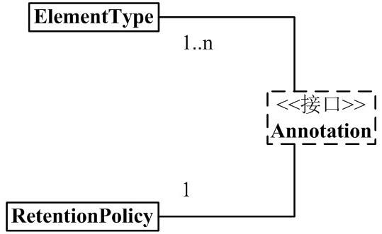
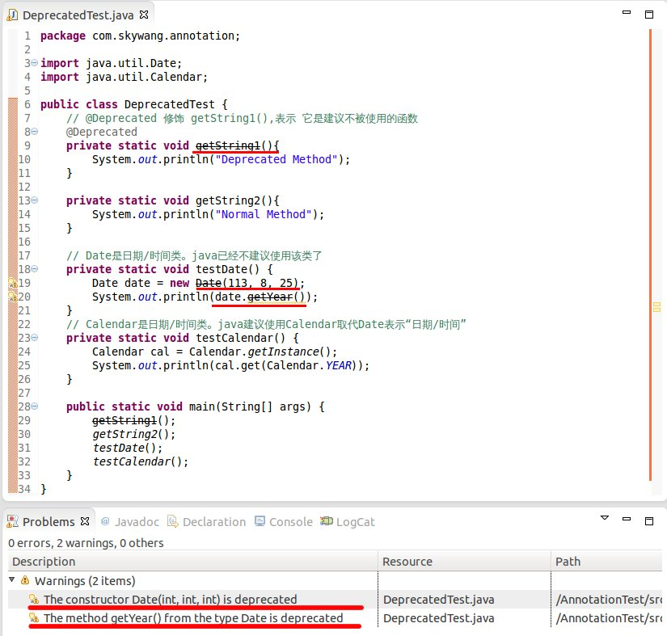

Classes, methods, variables, parameters, packages, etc. in the Java language can all be annotated. Unlike Javadoc, Java annotations can have their content retrieved via reflection. When the compiler generates class files, annotations can be embedded into the bytecode. The Java Virtual Machine can retain annotation content, and the content can be retrieved at runtime. Of course, it also supports custom Java annotations.
There are many articles about Java Annotations online, which can be dazzling. Java Annotations are actually quite simple, but the authors failed to explain clearly, leaving readers even more confused.
I organized Annotations according to my own understanding. The key to understanding Annotations is to understand their syntax and usage, and I have explained these in detail. After understanding the syntax and usage, looking at the framework diagram may give you a deeper appreciation. Enough rambling; let's begin explaining Annotations. If you find any errors or shortcomings in the article, please point them out!
Built-in Annotations
Java defines a set of annotations, 7 in total. 3 are in java.lang, and the remaining 4 are in java.lang.annotation.
The annotations that act on code are:
- @Override - Checks whether the method is an overriding method. If it finds that the parent class or the referenced interface does not have this method, a compilation error is reported.
- @Deprecated - Marks a method as obsolete. If the method is used, a compilation warning is reported.
- @SuppressWarnings - Instructs the compiler to ignore warnings declared in the annotation.
Annotations that act on other annotations (or meta-annotations) are:
- @Retention - Identifies how this annotation is saved: whether it is only in the code, compiled into the class file, or accessible via reflection at runtime.
- @Documented - Marks whether these annotations are included in the user documentation.
- @Target - Marks which kind of Java member this annotation should apply to.
- @Inherited - Marks which annotation class this annotation is inherited from (by default, annotations are not inherited by any subclasses).
Starting from Java 7, 3 additional annotations were added:
- @SafeVarargs - Supported from Java 7 onward, ignores warnings generated by calls to methods or constructors that use generic variable parameters.
- @FunctionalInterface - Supported from Java 8 onward, identifies an anonymous function or a functional interface.
- @Repeatable - Supported from Java 8 onward, indicates that an annotation can be used multiple times on the same declaration.
1. Annotation Architecture

From this, we can see:
(01) 1 Annotation is associated with 1 RetentionPolicy.
It can be understood as: every Annotation object has a unique RetentionPolicy attribute.(02) 1 Annotation is associated with 1~n ElementType.
It can be understood as: every Annotation object can have several ElementType attributes.
(03) Annotation has many implementation classes, including: Deprecated, Documented, Inherited, Override, etc.
Every implementation class of Annotation is "associated with 1 RetentionPolicy" and "associated with 1~n ElementType".
Below, I will first introduce the left half of the framework diagram (as shown below), namely Annotation, RetentionPolicy, and ElementType; then I will give examples to explain the implementation classes of Annotation.

2. Components of Annotation
Among the components of Java Annotations, there are 3 very important backbone classes. They are:
Annotation.java
public interface Annotation {
boolean equals(Object obj);
int hashCode();
String toString();
Class<? extends Annotation> annotationType();
}
ElementType.java
public enum ElementType {
TYPE, /* Class, interface (including annotation type), or enum declaration */
FIELD, /* Field declaration (including enum constant) */
METHOD, /* Method declaration */
PARAMETER, /* Parameter declaration */
CONSTRUCTOR, /* Constructor declaration */
LOCAL_VARIABLE, /* Local variable declaration */
ANNOTATION_TYPE, /* Annotation type declaration */
PACKAGE /* Package declaration */
}
RetentionPolicy.java
public enum RetentionPolicy {
SOURCE, /* Annotation information exists only during compiler processing; after the compiler finishes, the Annotation information no longer exists */
CLASS, /* The compiler stores the Annotation in the .class file corresponding to the class. Default behavior */
RUNTIME /* The compiler stores the Annotation in the class file, and it can be read by the JVM */
}
Explanation:
(01) Annotation is just an interface.
"Every Annotation" is associated with "1 RetentionPolicy" and is associated with "1~n ElementType". In layman's terms: every Annotation object has a unique RetentionPolicy attribute; as for the ElementType attribute, there are 1~n of them.
(02) ElementType is an enum type that is used to specify the type of an Annotation.
"Every Annotation" is associated with "1~n ElementType". When an Annotation is associated with a certain ElementType, it means that the Annotation has a certain purpose. For example, if an Annotation object is of METHOD type, then the Annotation can only be used to modify methods.
(03) RetentionPolicy is an enum type that is used to specify the policy of an Annotation. In simple terms, Annotations of different RetentionPolicy types have different scopes.
"Every Annotation" is associated with "1 RetentionPolicy".
- a) If the type of the Annotation is SOURCE, it means: the Annotation exists only during compiler processing; after the compiler finishes processing, the Annotation is no longer useful. For example, the "@Override" marker is an Annotation. When it modifies a method, it means that the method overrides a method of the parent class, and a syntax check is performed during compilation! After the compiler finishes processing, "@Override" has no further effect.
- b) If the type of the Annotation is CLASS, it means: the compiler stores the Annotation in the .class file corresponding to the class. This is the default behavior of Annotation.
- c) If the type of the Annotation is RUNTIME, it means: the compiler stores the Annotation in the class file, and it can be read by the JVM.
At this point, you just need to remember that "every Annotation" is associated with "1 RetentionPolicy" and is associated with "1~n ElementType". After learning the subsequent content, looking back at this content will make it easier to understand.
3. Annotations Provided by Java
After understanding the roles of the 3 classes above, we can now explain the syntax definitions of the Annotation implementation classes.
1) General Definition of Annotation
@Documented
@Target(ElementType.TYPE)
@Retention(RetentionPolicy.RUNTIME)
public @interface MyAnnotation1 {
}
Explanation:
The above is used to define an Annotation named MyAnnotation1. After defining MyAnnotation1, we can use it in code via "@MyAnnotation1". The others, @Documented, @Target, @Retention, @interface, are all used to modify MyAnnotation1. Below, let's explain their meanings respectively:
(01) @interface
When using @interface to define an annotation, it means that it implements the java.lang.annotation.Annotation interface, that is, the annotation is an Annotation.
When defining an Annotation, @interface is required.Note: This is different from our usual way of implementing interfaces with "implements". The implementation details of the Annotation interface are all done by the compiler. After defining an annotation with @interface, the annotation cannot inherit other annotations or interfaces.
(02) @Documented
By default, Annotations on classes and methods do not appear in javadoc. If the Annotation is modified with @Documented, it means that it can appear in javadoc.
When defining an Annotation, @Documented is optional; if it is not defined, the Annotation will not appear in javadoc.
(03) @Target(ElementType.TYPE)
Earlier we said that ElementType is the type attribute of an Annotation. And the role of @Target is to specify the type attribute of the Annotation.
@Target(ElementType.TYPE) means specifying that the type of this Annotation is ElementType.TYPE. This means that MyAnnotation1 is an annotation used to modify "class, interface (including annotation types), or enum declarations".
When defining an Annotation, @Target is optional. If there is @Target, the Annotation can only be used in the places it specifies; if there is no @Target, the Annotation can be used anywhere.
(04) @Retention(RetentionPolicy.RUNTIME)
Earlier we said that RetentionPolicy is the strategy attribute of an Annotation, and the role of @Retention is to specify the strategy attribute of the Annotation.
@Retention(RetentionPolicy.RUNTIME) means specifying that the strategy of this Annotation is RetentionPolicy.RUNTIME. This means that the compiler will retain the Annotation information in the .class file, and it can be read by the virtual machine.
When defining an Annotation, @Retention is optional. If there is no @Retention, the default is RetentionPolicy.CLASS.
2) Annotations Provided by Java
Through the above examples, we can understand: @interface is used to declare an Annotation, @Documented is used to indicate whether the Annotation will appear in javadoc, @Target is used to specify the type of the Annotation, and @Retention is used to specify the strategy of the Annotation.
After understanding this, we can easily understand the implementation classes of Annotations that come with java, that is, the right half of the Annotation architecture diagram. As shown below:

Commonly used Annotations in java:
@Deprecated -- @Deprecated 所标注内容，不再被建议使用。 @Override -- @Override 只能标注方法，表示该方法覆盖父类中的方法。 @Documented -- @Documented 所标注内容，可以出现在javadoc中。 @Inherited -- @Inherited只能被用来标注“Annotation类型”，它所标注的Annotation具有继承性。 @Retention -- @Retention只能被用来标注“Annotation类型”，而且它被用来指定Annotation的RetentionPolicy属性。 @Target -- @Target只能被用来标注“Annotation类型”，而且它被用来指定Annotation的ElementType属性。 @SuppressWarnings -- @SuppressWarnings 所标注内容产生的警告，编译器会对这些警告保持静默。
Since "@Deprecated and @Override" are similar, and "@Documented, @Inherited, @Retention, @Target" are similar; below, we will only explain the three Annotations: @Deprecated, @Inherited, and @SuppressWarnings.
2.1) @Deprecated
The definition of @Deprecated is as follows:
@Documented
@Retention(RetentionPolicy.RUNTIME)
public @interface Deprecated {
}
Explanation:
- (01) @interface -- It is used to modify Deprecated, meaning that Deprecated implements the java.lang.annotation.Annotation interface; that is, Deprecated is an annotation. (02) @Documented -- Its role is to indicate that this annotation can appear in javadoc.
- (03) @Retention(RetentionPolicy.RUNTIME) -- Its role is to specify that the strategy of Deprecated is RetentionPolicy.RUNTIME. This means that the compiler will retain Deprecated's information in the .class file, and it can be read by the virtual machine.
- (04) The content marked by @Deprecated is no longer recommended for use.
For example, if a method is marked with @Deprecated, that method is no longer recommended for use. If a developer tries to use or override a method marked with @Deprecated, the compiler will give corresponding prompt information. An example is as follows:

DeprecatedTest.java
import java.util.Calendar;
public class DeprecatedTest {
// @Deprecated modifies getString1(), indicating that it is a function that is not recommended for use
@Deprecated
private static void getString1(){
System.out.println("Deprecated Method");
}
private static void getString2(){
System.out.println("Normal Method");
}
// Date is a date/time class. java no longer recommends using this class
private static void testDate() {
Date date = new Date(113, 8, 25);
System.out.println(date.getYear());
}
// Calendar is a date/time class. java recommends using Calendar instead of Date to represent "date/time"
private static void testCalendar() {
Calendar cal = Calendar.getInstance();
System.out.println(cal.get(Calendar.YEAR));
}
public static void main(String[] args) {
getString1();
getString2();
testDate();
testCalendar();
}
}
Explanation:
The above is a screenshot from eclipse, comparing "getString1() and getString2()" and "testDate() and testCalendar()" in the class.
(01) getString1() is marked with @Deprecated, meaning that getString1() is no longer recommended for use; therefore, both the definition and invocation of getString1() have a strikethrough. This strikethrough is Eclipse's handling of methods marked with @Deprecated.
getString2() is not marked with @Deprecated, so its display is normal.
(02) testDate() calls methods related to Date, but java has recommended against using Date for date/time operations. Therefore, when calling Date's API, warning messages are generated, namely the warnings in the figure.
testCalendar() calls Calendar's API to manipulate date/time. java recommends using Calendar instead of Date. Therefore, operating on Calendar will not produce a warning.
2.2) @Inherited
The definition of @Inherited is as follows:
@Documented
@Retention(RetentionPolicy.RUNTIME)
@Target(ElementType.ANNOTATION_TYPE)
public @interface Inherited {
}
Explanation:
- (01) @interface -- It is used to modify Inherited, meaning that Inherited implements the java.lang.annotation.Annotation interface; that is, Inherited is an annotation.
- (02) @Documented -- Its role is to indicate that this annotation can appear in javadoc.
- (03) @Retention(RetentionPolicy.RUNTIME) -- Its role is to specify that the strategy of Inherited is RetentionPolicy.RUNTIME. This means that the compiler will retain Inherited's information in the .class file, and it can be read by the virtual machine.
- (04) @Target(ElementType.ANNOTATION_TYPE) -- Its role is to specify that the type of Inherited is ANNOTATION_TYPE. This means that @Inherited can only be used to annotate "Annotation types".
- (05) The meaning of @Inherited is that the Annotation it annotates will have inheritance.
MyAnnotation, then Base "has the annotation MyAnnotation"; now, Sub inherits Base, and because MyAnnotation is @Inherited (has inheritance), Sub also "has the annotation MyAnnotation".
Example of using @Inherited:
InheritableSon.java
import java.lang.annotation.ElementType;
import java.lang.annotation.Retention;
import java.lang.annotation.RetentionPolicy;
import java.lang.annotation.Inherited;
/**
* Custom-defined Annotation.
*/
@Target(ElementType.TYPE)
@Retention(RetentionPolicy.RUNTIME)
@Inherited
@interface Inheritable
{
}
@Inheritable
class InheritableFather
{
public InheritableFather() {
// Whether InheritableBase has the Inheritable Annotation
System.out.println("InheritableFather:"+InheritableFather.class.isAnnotationPresent(Inheritable.class));
}
}
/**
* The InheritableSon class merely inherits from InheritableFather,
*/
public class InheritableSon extends InheritableFather
{
public InheritableSon() {
super(); // Call the parent class constructor
// Whether the InheritableSon class has the Inheritable Annotation
System.out.println("InheritableSon:"+InheritableSon.class.isAnnotationPresent(Inheritable.class));
}
public static void main(String[] args)
{
InheritableSon is = new InheritableSon();
}
}
Run result:
InheritableFather:true InheritableSon:true
Now, let's modify InheritableSon.java: comment out the "@Inherited annotation of Inheritable".
InheritableSon.java
import java.lang.annotation.ElementType;
import java.lang.annotation.Retention;
import java.lang.annotation.RetentionPolicy;
import java.lang.annotation.Inherited;
/**
* Custom Annotation.
*/
@Target(ElementType.TYPE)
@Retention(RetentionPolicy.RUNTIME)
//@Inherited
@interface Inheritable
{
}
@Inheritable
class InheritableFather
{
public InheritableFather() {
// Whether InheritableBase has the Inheritable Annotation
System.out.println("InheritableFather:"+InheritableFather.class.isAnnotationPresent(Inheritable.class));
}
}
/**
* The InheritableSon class merely inherits from InheritableFather,
*/
public class InheritableSon extends InheritableFather
{
public InheritableSon() {
super(); // Call the parent class's constructor
// Whether the InheritableSon class has the Inheritable Annotation
System.out.println("InheritableSon:"+InheritableSon.class.isAnnotationPresent(Inheritable.class));
}
public static void main(String[] args)
{
InheritableSon is = new InheritableSon();
}
}
Output:
InheritableFather:true InheritableSon:false
Comparing the two results above, we find that when the Inheritable annotation is marked with @Inherited, it has inheritance. Otherwise, it has no inheritance.
2.3) @SuppressWarnings
The definition of @SuppressWarnings is as follows:
@Target({TYPE, FIELD, METHOD, PARAMETER, CONSTRUCTOR, LOCAL_VARIABLE})
@Retention(RetentionPolicy.SOURCE)
public @interface SuppressWarnings {
String[] value();
}
Explanation:
(01) @interface -- It is used to modify SuppressWarnings, meaning that SuppressWarnings implements the java.lang.annotation.Annotation interface; that is, SuppressWarnings is an annotation.
(02) @Retention(RetentionPolicy.SOURCE) -- Its purpose is to specify that the policy of SuppressWarnings is RetentionPolicy.SOURCE. This means that the SuppressWarnings information exists only during compiler processing; after the compiler finishes processing, SuppressWarnings has no effect.
(03) @Target({TYPE, FIELD, METHOD, PARAMETER, CONSTRUCTOR, LOCAL_VARIABLE}) -- Its purpose is to specify that the types of SuppressWarnings include TYPE, FIELD, METHOD, PARAMETER, CONSTRUCTOR, LOCAL_VARIABLE.
- TYPE means it can annotate "classes, interfaces (including annotation types), or enum declarations".
- FIELD means it can annotate "field declarations".
- METHOD means it can annotate "methods".
- PARAMETER means it can annotate "parameters".
- CONSTRUCTOR means it can annotate "constructors".
- LOCAL_VARIABLE means it can annotate "local variables".
(04) String[] value(); means that SuppressWarnings can specify parameters.
(05) The purpose of SuppressWarnings is to make the compiler remain silent about certain warnings in the content it annotates. For example, "@SuppressWarnings(value={"deprecation", "unchecked"})" means to remain silent about the "deprecation warnings" and "unchecked conversion warnings" in the annotated content. Example:


SuppressWarningTest.java
public class SuppressWarningTest {
//@SuppressWarnings(value={"deprecation"})
public static void doSomething(){
Date date = new Date(113, 8, 26);
System.out.println(date);
}
public static void main(String[] args) {
doSomething();
}
}
Explanation:
(01) In the left figure, @SuppressWarnings(value={"deprecation"}) is not used, and Date is a class that Java no longer recommends using. Therefore, calling Date's API will produce a warning. In the right figure, @SuppressWarnings(value={"deprecation"}) is used. Therefore, the compiler remains silent about the "warning generated by calling Date's API".
Supplement: Table of commonly used keywords for SuppressWarnings
deprecation -- 使用了不赞成使用的类或方法时的警告 unchecked -- 执行了未检查的转换时的警告，例如当使用集合时没有用泛型 (Generics) 来指定集合保存的类型。 fallthrough -- 当 Switch 程序块直接通往下一种情况而没有 Break 时的警告。 path -- 在类路径、源文件路径等中有不存在的路径时的警告。 serial -- 当在可序列化的类上缺少 serialVersionUID 定义时的警告。 finally -- 任何 finally 子句不能正常完成时的警告。 all -- 关于以上所有情况的警告。
4. The Role of Annotation
Annotation is an auxiliary class that is widely used in tool frameworks such as Junit, Struts, and Spring.
The Annotation functions that we often use in programming include:
1) Compile-time Checking
Annotation has the "function of letting the compiler perform compilation checks".
For example, @SuppressWarnings, @Deprecated, and @Override all have compilation checking functions.
(01) @SuppressWarnings and @Deprecated have already been described in detail in "Part 3". No further examples will be given here.
(02) If a method is marked with @Override, it means that the method overrides a method with the same name in the parent class. If a method is marked with @Override, but the parent class does not have a method with the same name that is "marked with @Override", the compiler will report an error. Example:

OverrideTest.java
/**
* toString() is defined in java.lang.Object;
* Therefore, using @Override here is correct.
*/
@Override
public String toString(){
return "Override toString";
}
/**
* getString() is not defined in any parent class of OverrideTest;
* However, it is marked with @Override here, so a compilation error will occur!
*/
@Override
public String getString(){
return "get toString";
}
public static void main(String[] args) {
}
}
The above is a screenshot of the program in eclipse. From it, we can see that the "getString()" function will report an error. This is because "getString() is marked with @Override, but getString1() is not defined in any parent class of OverrideTest".
Commenting out "@Override above getString()" will resolve the error.
2) Using Annotations in Reflection
In reflection functions such as Class, Method, and Field, there are many interfaces related to Annotation.
This also means that we can parse and use Annotation in reflection.
AnnotationTest.java
import java.lang.annotation.Target;
import java.lang.annotation.ElementType;
import java.lang.annotation.Retention;
import java.lang.annotation.RetentionPolicy;
import java.lang.annotation.Inherited;
import java.lang.reflect.Method;
/**
* Example of using Annotation in reflection functions
*/
@Retention(RetentionPolicy.RUNTIME)
@interface MyAnnotation {
String[] value() default "unknown";
}
/**
* Person class. It will use the MyAnnotation annotation.
*/
class Person {
/**
* The empty() method is marked by both "@Deprecated" and "@MyAnnotation(value={"a","b"})"
* (01) @Deprecated means that the empty() method is no longer recommended for use
* (02) @MyAnnotation means that the value of MyAnnotation corresponding to the empty() method is the default value "unknown"
*/
@MyAnnotation
@Deprecated
public void empty(){
System.out.println("\nempty");
}
/**
* sombody() is marked by @MyAnnotation(value={"girl","boy"}),
* @MyAnnotation(value={"girl","boy"}) means that the value of MyAnnotation is {"girl","boy"}
*/
@MyAnnotation(value={"girl","boy"})
public void somebody(String name, int age){
System.out.println("\nsomebody: "+name+", "+age);
}
}
public class AnnotationTest {
public static void main(String[] args) throws Exception {
// Create a new Person
Person person = new Person();
// Get the Class instance of Person
Class<Person> c = Person.class;
// Get the Method instance of the somebody() method
Method mSomebody = c.getMethod("somebody", new Class[]{String.class, int.class});
// Execute the method
mSomebody.invoke(person, new Object[]{"lily", 18});
iteratorAnnotations(mSomebody);
// Get the Method instance of the somebody() method
Method mEmpty = c.getMethod("empty", new Class[]{});
// Execute the method
mEmpty.invoke(person, new Object[]{});
iteratorAnnotations(mEmpty);
}
public static void iteratorAnnotations(Method method) {
// Determine whether the somebody() method contains the MyAnnotation annotation
if(method.isAnnotationPresent(MyAnnotation.class)){
// Get the MyAnnotation annotation instance of the method
MyAnnotation myAnnotation = method.getAnnotation(MyAnnotation.class);
// Get the value of myAnnotation and print it out
String[] values = myAnnotation.value();
for (String str:values)
System.out.printf(str+", ");
System.out.println();
}
// Get all annotations on the method and print them out
Annotation[] annotations = method.getAnnotations();
for(Annotation annotation : annotations){
System.out.println(annotation);
}
}
}
Output:
somebody: lily, 18 girl, boy, @com.skywang.annotation.MyAnnotation(value=[girl, boy]) empty unknown, @com.skywang.annotation.MyAnnotation(value=[unknown]) @java.lang.Deprecated()
3) Generating Help Documentation Based on Annotations
By adding the @Documented tag to an Annotation annotation, the Annotation tag can appear in javadoc.
4) Helpful for Viewing Code
Through @Override, @Deprecated, etc., we can easily understand the general structure of a program.
In addition, we can also implement some functions through custom Annotation.
Original address: https://www.cnblogs.com/skywang12345/p/3344137.html
Click me to share notes
<p style="font-size:14px;">Notes need to be an extension of this article's content!</p><br> <p style="font-size:12px;"><a href="../tougao.html" target="_blank">To submit an article, click here</a></p> <p style="font-size:14px;"><a href="./runoob-user-test-intro.html" target="_blank">How to get a registration invitation code</a></p> <h3 class="text-muted"><i class="fa fa-info-circle" aria-hidden="true"></i> You must <a href=".." class="runoob-pop">login</a> before sharing notes!</h3> <p><a href="./runoob-user-test-intro.html" target="_blank">How to get a registration invitation code</a></p>